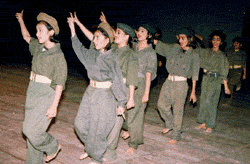
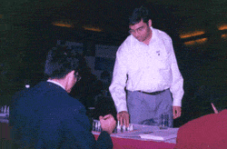

Home
Vision
History
Location
Organisation
Curriculum
School Uniform
Teaching Staff
Facilities
Activities
Rules
Register online
Photogallery
Contact Us
Site Map
Activities
Sports
Physical Education and Training are given due importance. There are trained physical Instructors who conduct P.T. and mass P.T. classes on a regular basis. Other sports such as athletics, cricket, football etc are organised throughout the year. Inter-House competitions in football, cricket (for Boys) and kho-kho (for Girls) generate a lot of interest. Students prepare under the guidance of physical education teachers in various sports and take part in the Annual Athletic Meet of the school. Talented children also take part in inter-school competitions.
ANNUAL SPORTS
Co-curricular Activities
The children of the school are encouraged to develop their creative instincts, be it in art, music, dance, dramatics, literary activities or anything else. Every floor of the school building has provision for a wall magazine where literary and artistic endeavours of the students are put up for display on a regular basis. The School Magazine is another important vehicle for creative expression. The Annual Awards Ceremonies and other functions also provide opportunities for students to showcase their talents. Regular inter-class competitions in quiz, public speaking, art, creative writing and other activities are held throughout the year.
Co-curricular Activities
Counselling
Counselling is provided to students as well as guardians on the courses that should be selected in higher classes. This is done on the basis of aptitude tests and assessment of academic performance. Weak and backward students are given extra attention in the form of special classes held every Saturday. (This is applicable for senior students of classes X & XII only).
Parent-Teacher Meet
A regular contact is maintained between teachers and parents through the school diary. But, for more personalised dialogue and exchange of views parent-teacher meetings are convened from time to time, where the progress and performance of the students are evaluated. This helps to promote a harmonious relationship between the school staff and parents/guardians.
Competitions
Students frequently take part in intra & inter-school competitions in Quiz, Public Speaking, Computer Science as well as Creative Writing contests. They have to take part in the Albert Barrow Creative Writing Competition which is organised by the Council for ISCE, New Delhi. The students have also to take part in the Declamation Contest on FAO Day as well as the SAARC Youth Festival. Our students have performed remarkably in the Frank Anthony Memorial Competition.
Tours
Educational tours and excursions are arranged to places of historical interest during vacations. Short outings are also organised from time to time on weekends. In addition, picnics are held for different classes, usually during winter.
Guest Speakers
Learned scholars and public luminaries are invited to the school to give lectures on important occasions or celebration days.
Awards
Students are rewarded for their achievements in various disciplines such as academics, sports, cultural accomplishments as well as their moral character. Scholarships for teachers' wards and for poor but meritorious students have been instituted.
NCC

There is no NCC unit in the school at present. But for those students who are desirous of joining, arrangements are made to send them for NCC training at Fort William where they have to attend classes on Sundays. The school is in touch with the right authorities to have an NCC unit at the school.

Ripu Daman Daga and Saurabh Hazra have won at different levels and in the Final Round held at Sarvadaya Vidyalaya, Nalanchira, Thiruvananthpuram, Kerala, they were awarded certificates of appreciation.
Powered by Google.com